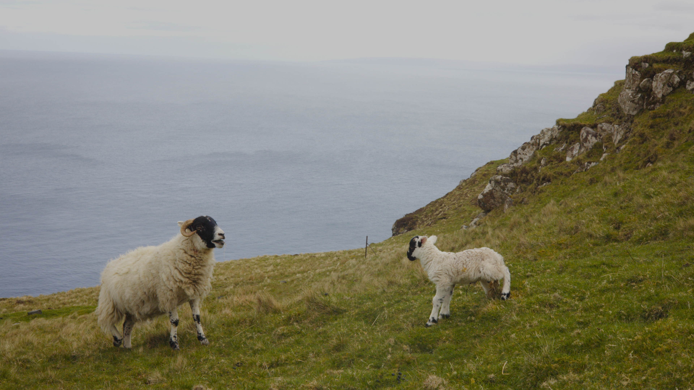
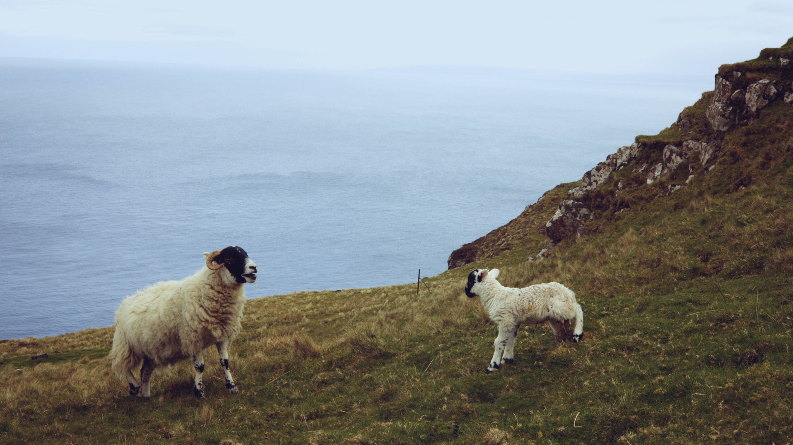

Recipe 01
Clean modern negative
A crisp, contemporary film feel with just enough texture to read as film.


BaseSeneca Cine- Full Preset → a modern / balanced stock (start from Seneca Cine).
- Printer Lights: leave at 25, then nudge R / B a point or two to taste.
- Textures Editor → master format 35mm.
- Grain Amount ≈ 0.5, Halation on but gentle.
- Theater Screen Sim low (deeper blacks) for a clean, contrasty base.